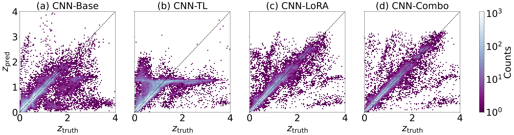
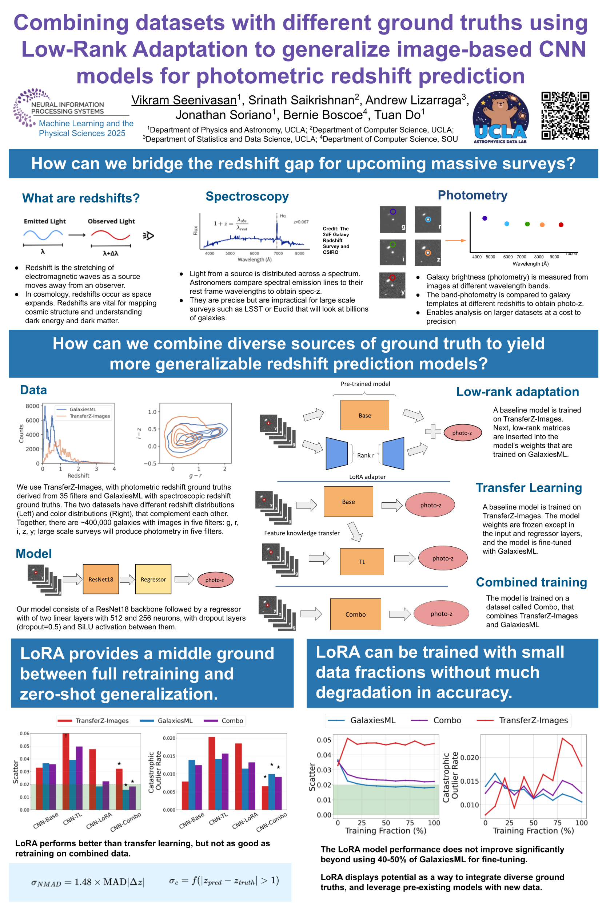

Table of Contents
Overview
Large scale surveys such as LSST and Euclid will image billions of galaxies and require accurate galaxy redshift estimates to constrain properties of dark energy and cosmological models. Machine learning models that predict redshift meet the demand of processing these massive datasets, but traditionally only use spectroscopic redshift as ground truth in training. Spectroscopic redshifts are limited to bright emission galaxies, so represent only a subset of galaxy populations in the universe. Photometric redshifts obtained from galaxy photometry sampled in discrete wavelength bands are available for fainter and more diverse galaxy types, but are less accurate. Thus, we investigate unifying the strengths of spectroscopic (accuracy of redshift) and photometric (representativeness of diverse galaxies) redshift ground truths to create models that generalize across gaalxy populations.
We use a ResNet18 augmented with a neural network regressor to predict redshifts from 5-band grizy images. We use two datasets in this work: (1) GalaxiesML (Do et. al. 2024), a spectroscopic redshift ground truth dataset, and (2) TransferZ-Images, a photometric redshift ground truth dataset we create from TransferZ (Soriano et. al. 2024). We train a base model using TransferZ-Images, then fine-tune using LoRA or traditional transfer learning on GalaxiesML. The LoRA model performs better than the traditional transfer learning method, with ∼ 2.5× less bias and ∼2.2× less scatter. Retraining the model on a combined dataset yields a model that generalizes better than LoRA but at a cost of greater computation time. Our work shows that LoRA is useful for fine-tuning regression models in astrophysics by providing a middle ground between full retraining and no retraining. LoRA shows potential in allowing us to leverage existing pretrained astrophysical models, especially for data sparse tasks.
NeurIPS ML4PS Conference Paper
Our paper submission to the NeurIPS 2025 Machine Learning and the Physical Sciences Workshop details the data, model architecture, training methodology and test results.
View the Paper on the NeurIPS-ML4PS websiteData
We use two datasets in this work. First, we construct TransferZ-Images from TransferZ (Soriano et. al. 2024), adding grixy images from
Some figures

Fig 1: Visualization of LoRA implementation on a ResNet + regressor Model, based on Fig 1. in Hu et. al. 2021.

Fig 2: The true redshift vs the predicted redshift for four models (a) CNN-Base, (b) CNN-TL, (c) CNN-LoRA and (d) CNN-Combo, evaluated on the Combo dataset. The color bar describes the log norm of the number of galaxies in each 2D histogram bin. The one-to-one line represents perfect agreement between ground truth and predictions. CNN-LoRA performs better than traditional transfer learning (CNN-TL), but not as well as retraining the entire dataset (CNN-Combo)
GitHub Repository
Python scripts for building and training the model, plotting notebooks, installation requirements, and model predictions are included in the repository.
Access RepositoryPoster
This poster was presented at the NeurIPS 2025 Machine Learning and the Physical Sciences Workshop on December 6, 2025 in San Diego, California.

Download as PDF
License
This publication is licensed under a Creative Commons Attribution 4.0 International License (CC BY 4.0).